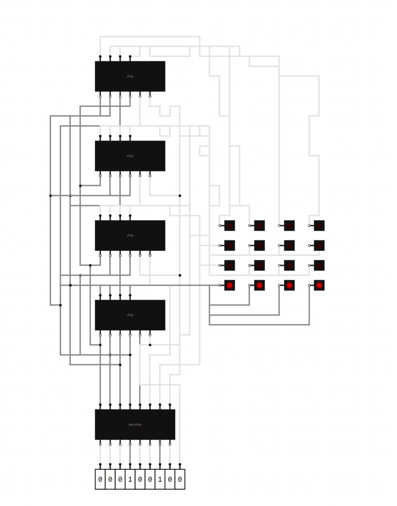
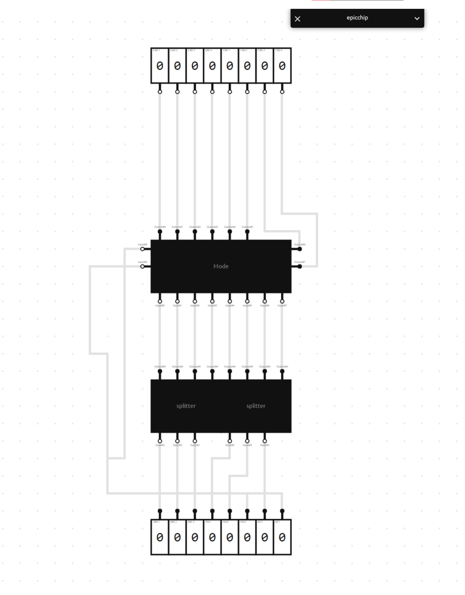
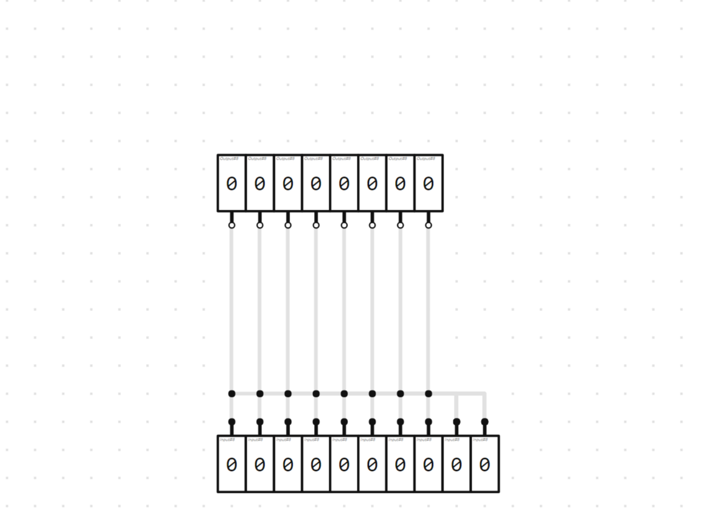
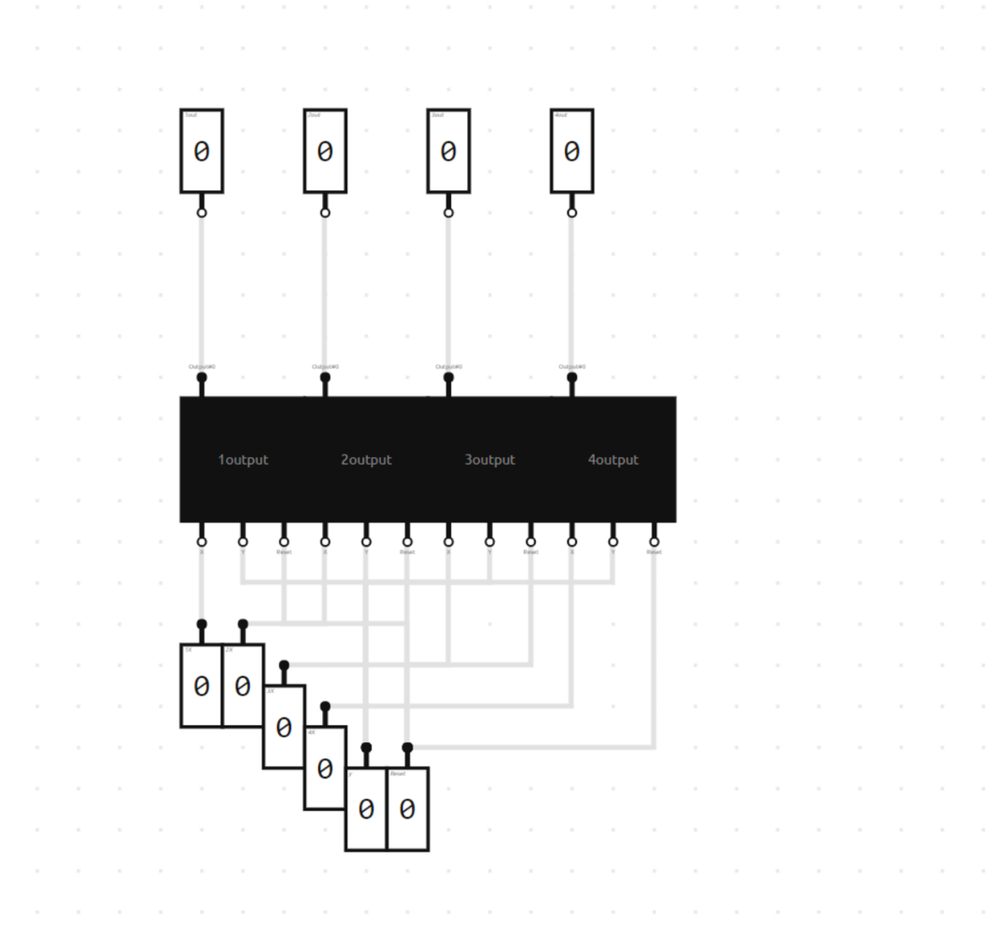
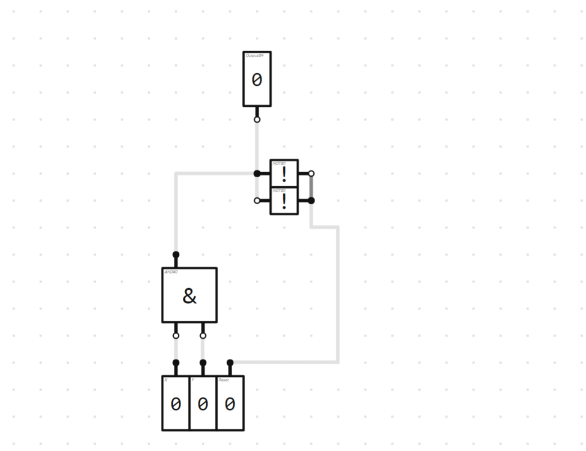

CONCEPT
This is a very similar concept to my last display, but now entire lines can be drawn at once. I made it only 4x4 just because making it bigger would not change anything about the concept im trying to show and just add unnecessary labor

HOW IT WORKS
The functionality of this is pretty simple actually, and is very similar to my last build basically the first 3 bits are the X and the next 3 bits are the y,(I could have used two for each but this was nice because I don't need a enable wire). The next bit basically enables all Y wires, and the next one enables all X wires, meaning that each pixel now only has one wire requirement and allows you to easily draw lines. A cool side effect of this is that it's extremely fast to fill the entire screen since enabling both line wires means every pixel is enabled. The actual mechanism responsible for this lies in the chip connecting the input boxes to everything else, and is extremely simple and can be seen below


The four modules that actually control if a pixel is on or off is identical to my last display as well

